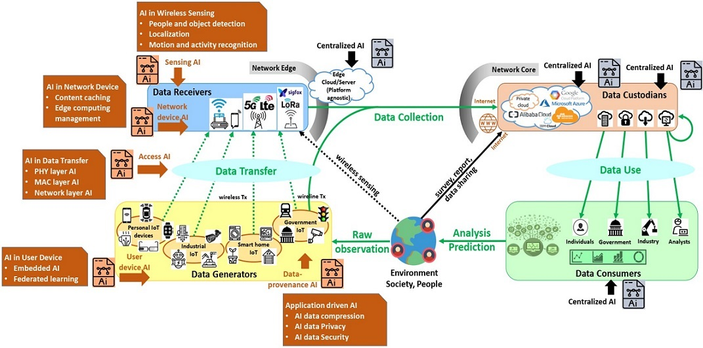

Copyright © 2020 Wireless Networks Laboratory.
Copyright © 2020 Wireless Networks Laboratory.
Research Area
WINE research mainly focuses on the application of both AI and network optimization in wireless and networking system.
Currently, we are interested in AI and future 5G/ B5G.
Wireless AI 
The main role of AI in wireless communication is to assist the wireless radio in intelligent adaptive learning and decision making, so that the diverse requirements of next-generation wireless networks can be met. Machine learning is one of the most promising artificial intelligence tools, conceived to support smart radio terminals. For that cause, Wine Lab is eagerly researching on how the artificial intelligence techniques such as deep learning, artificial neural networks (ANN) can be used dynamically to solve the numerous challenges in wireless networking systems. FUTURE 5G/ B5G Currently, the Internet is becoming more and more complicated due to a massive number of users and diversified applications. To support the further development of the Internet, researchers are dealing with a number of problems such as network architecture, network topology; high capacity backbone network, new protocols, etc. Towards the Future Internet generations, in new optimum techniques to improve backbone network capacity as well as new wireless techniques to improve access networks. NETWORK OPTIMIZATION In network optimization topic, we consider a number of problems such as interference handling, power control, cognitive channel sensing, scheduling, resource allocation, routing, congestion control, etc. These problems are individually solved in the corresponding network layer as well as jointly solved by using cross-layer network design. By using optimization theory techniques such as convex optimization, global optimization, robust optimization... network performance is improved significantly. |
Copyright © 2020 Wireless Networks Laboratory.